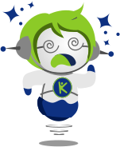
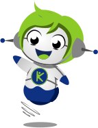
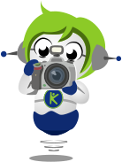

Realidad TEA
Validacion desde familias, inclusion y necesidades reales del aula y el hogar.
Pitch de aceleracion
Un asistente pedagogico inclusivo con IA para familias de estudiantes con TEA.

Que necesidad resolvemos
Muchas instrucciones escolares no estan adaptadas: son largas, abstractas y poco visuales. Para familias de estudiantes con TEA, eso puede transformar el aprendizaje en una lucha diaria.
Por que somos los mas indicados
Validacion desde familias, inclusion y necesidades reales del aula y el hogar.
Interfaces calmadas, escaneables y pensadas para reducir carga cognitiva.
Lectura, adaptacion y estructuracion de tareas con medicion de progreso.
La ventaja no es solo tecnica: AMIKO entiende que la experiencia debe sentirse humana, segura y cercana.
Como pretendemos resolverla

AMIKO interpreta la tarea, genera instrucciones simples, sugiere apoyos visuales y orienta al adulto para acompanar sin sobrecargar.
Modelo de validacion
3 meses para medir uso real, retencion, satisfaccion y disposicion de pago.
Prueba gratis limitada y luego suscripcion. Sin prometer IA ilimitada.
Lectura de tarea, adaptacion textual e imagenes se miden por separado.
Que necesitamos para resolverla
Que beneficio aportamos al inversor
Familias que necesitan apoyo practico, accesible y cotidiano.
Flujo pedagogico, marca, datos de progreso y seguridad visual.
Validar primero, medir costos, ajustar precio y crecer con evidencia.
AMIKO ayuda a que las familias acompanen mejor y los estudiantes avancen con mas autonomia, calma y confianza.
